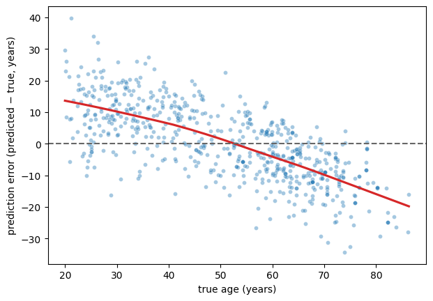

Fairness#
Two questions hide under this word, and they need separating before anything useful can be said.
Does the model work equally well for everyone? A model with an average error of 5 years might have an error of 3 in one group and 12 in another. The average is real; so is the disparity, and the average conceals it.
Was the model asked to predict the right thing? This one is not about performance at all. A model can be accurate, calibrated, externally validated, and still entrench a harm — because the quantity it was trained to predict was a poor stand-in for the quantity anyone cared about.
The second question is the deeper one, and the clearest case study in the literature is not a brain imaging study at all.
The algorithm that was accurate and wrong#
Obermeyer et al. [28] examined a commercial risk-prediction algorithm used by US health systems to select patients for “high-risk care management” programmes — extra nursing attention, extra appointment slots, coordinated care. Patients above the 97th percentile of predicted risk were enrolled automatically. Algorithms of this class are applied, by industry estimates, to around 200 million people a year.
The algorithm was trained to predict total health-care costs in the coming year, from claims data: demographics, insurance type, diagnoses, procedures, medications. It did not use race as a feature.
It was also, on its own terms, a good model. At every level of predicted risk, Black and White patients went on to incur about the same costs — the predictions were well calibrated, and calibrated equally within each racial group.
And yet, at the same risk score, Black patients were considerably sicker: 26.3% more chronic conditions (4.8 versus 3.8), worse blood pressure, worse diabetic control. The authors calculated that removing the disparity would raise the share of Black patients receiving the extra help from 17.7% to 46.5%. The finding was not a quirk of one hospital: the algorithm’s manufacturer repeated the analysis on its own national database of 3.7 million insured patients and confirmed it.
Why it happened#
The mechanism is worth walking through slowly, because it is entirely mundane and that is the point.
The health system wanted to find the patients with the greatest need. Need is not recorded in a database. Cost is. So cost became the label.
But cost does not measure need — it measures need that got treated. And for reasons ranging from transport and time off work to insurance, mistrust, and differential treatment by clinicians, less money is spent on Black patients at the same level of illness: about $1,801 less per year at an equal number of chronic conditions.
Now put the two facts together. If the model is calibrated on cost, and cost is systematically lower for Black patients at equal illness, then equal predicted cost necessarily means unequal illness. The disparity is not a bug in the fitting procedure. It is an algebraic consequence of training a good model on a label with a group-dependent offset. The algorithm faithfully learned a historical pattern of unequal treatment and re-expressed it as a prediction of unequal need.
The fix, and what it tells us#
The authors did not change the algorithm. They changed the label — training the identical procedure to predict active chronic conditions instead of costs. That roughly doubled the share of Black patients among those auto-enrolled, from 14.1% to 26.7%. A further variant, predicting an index that combined health with cost, reduced their measure of bias — the excess chronic conditions carried by Black patients at equal risk score — by 84%.
Why no amount of methodological rigour would have caught this#
Everything this book has taught you was satisfied.
Not overfitted: it held up out of sample, and was deployed at national scale.
Not leaky: no implausible performance.
Well calibrated on the quantity it predicted, and calibrated equally across racial groups.
It did not even use the protected attribute.
Its behaviour was reproduced in an independent national dataset of 3.7 million patients.
And here is the part worth sitting with: even a textbook external validation would have passed it. Apply the model at a new hospital, compare predicted with actual costs, and it would predict costs well there too — because it does predict costs well. Every validation available to you validates the model against its label.
Cross-validation asks whether your estimate of \(f\) generalizes to new draws from the same distribution. External validation asks whether it transports to a new site. Neither asks whether \(y\) was the right thing to predict — and neither can, because the quantity actually of interest was never measured. You cannot cross-validate against a variable that is not in your data.
This is what psychometricians call construct validity, and it is the part of measurement theory that predictive modelling has been slowest to import. The diagnostic that did work is worth memorizing, because it generalizes: audit the model’s output against an independently measured proxy for the construct you actually care about, stratified by a group variable the model never saw. Not against its label. Against the thing you meant.
Note
The authors list the same failure mode elsewhere: hospital quality measured by readmission rates penalizes hospitals serving poorer populations; credit scores predict outcomes shaped by discrimination in employment; predictive policing predicts recorded crime, which reflects where police already go; hiring algorithms predict supervisor ratings, which carry the biases of supervisors.
Does our model work equally well for everyone?#
Back to the brain. The first fairness question — equal performance across groups — is one we can actually run.
import numpy as np
import pandas as pd
import seaborn as sns
import matplotlib.pyplot as plt
from sklearn.linear_model import Ridge
from sklearn.preprocessing import StandardScaler
from sklearn.pipeline import Pipeline
from sklearn.model_selection import cross_val_predict, KFold
from sklearn.metrics import mean_absolute_error
DATA_URL = "https://raw.githubusercontent.com/pni-lab/predmod_lecture/master/ex_data/IXI/ixi.csv"
ixi = pd.read_csv(DATA_URL).sample(frac=1, random_state=42).reset_index(drop=True)
TARGET = 'Age'
FEATURES = [c for c in ixi.columns if c.endswith('_volume')]
model = Pipeline([('standardize', StandardScaler()), ('regression', Ridge(alpha=100))])
ixi['predicted'] = cross_val_predict(model, X=ixi[FEATURES], y=ixi[TARGET], cv=KFold(5))
ixi['error'] = ixi['predicted'] - ixi[TARGET]
# head size is not recorded directly, so we use total cortical volume as a stand-in
ixi['head_size'] = pd.qcut(ixi[FEATURES].sum(axis=1), 3, labels=['small', 'medium', 'large'])
by_size = ixi.groupby('head_size', observed=True).apply(
lambda g: pd.Series({'n': len(g),
'mean age': g[TARGET].mean(),
'MAE (years)': mean_absolute_error(g[TARGET], g['predicted']),
'mean signed error': g['error'].mean()}),
include_groups=False)
by_size.round(2)
| n | mean age | MAE (years) | mean signed error | |
|---|---|---|---|---|
| head_size | ||||
| small | 213.0 | 60.54 | 9.74 | -0.17 |
| medium | 212.0 | 51.99 | 10.14 | -0.19 |
| large | 213.0 | 39.87 | 9.39 | 0.57 |
The audit comes back largely reassuring: the three groups’ errors span three-quarters of a year (9.4 to 10.1), with only a modest over-prediction in the large-volume group (+0.6 years). Report that. A null result from a fairness audit is a finding, and a study that ran the analysis and found little is more trustworthy than one that did not look.
But note why the second column has to be there, and then note what it does to the conclusion. The groups differ enormously in mean age — 61, 52 and 40 years — because total cortical volume is exactly the variable that the previous page showed to be entangled with both age and the model’s output. So this is not a clean test of “does the model work equally well for large and small heads”: the grouping variable is confounded with the target by construction, and any result would have been hard to attribute. It is a reminder that a subgroup audit is only as interpretable as the subgroups are comparable — which is why the variables worth auditing on (sex, site, scanner) are the ones chosen at study design, not improvised from the features.
Our model does, at any rate, treat one group markedly worse than another. Just not this grouping.
The disparity that is built into the method#
There is a second, more systematic unfairness in our model, and it afflicts essentially every brain-age model ever published.
plt.figure(figsize=(7, 4.8))
sns.scatterplot(data=ixi, x=TARGET, y='error', alpha=0.4, s=18)
sns.regplot(data=ixi, x=TARGET, y='error', scatter=False, color='#d62728', lowess=True)
plt.axhline(0, color='0.4', ls='--')
plt.xlabel('true age (years)')
plt.ylabel('prediction error (predicted − true, years)')
plt.show()
young = ixi[ixi[TARGET] < 30]
old = ixi[ixi[TARGET] > 70]
print(f'participants under 30 (n={len(young)}): predicted {young["error"].mean():+.1f} years on average')
print(f'participants over 70 (n={len(old)}): predicted {old["error"].mean():+.1f} years on average')

participants under 30 (n=104): predicted +10.5 years on average
participants over 70 (n=90): predicted -13.2 years on average
The young are predicted too old; the old are predicted too young. This is regression towards the mean — a mathematical consequence of any model that explains less than all of the variance, which is to say, of every model. Shrinking predictions towards the training mean is exactly what minimizes squared error, so the fitting procedure produces this on purpose.
It is also a fairness problem with teeth, because brain-age models are used by computing the brain-age gap: predicted age minus chronological age, interpreted as “this brain looks older than it should”. Our model assigns a positive gap to almost everyone under 30 and a negative gap to almost everyone over 70 — purely as an artefact of the regression, before any biology. If you then correlate that gap with anything that varies with age — and most clinical variables do — you will find associations that are entirely manufactured.
The brain-age literature has developed explicit corrections for this bias. The lesson for this book is more general: a systematic error that depends on the target, or on any variable correlated with it, is a bias in every subgroup defined by that variable — and the overall MAE will never show it to you. Plot your errors against everything you have.
Fairness measures, and why you cannot have all of them#
For classification, several formal criteria compete:
Demographic parity: the model flags the same proportion of each group.
Equalized odds: true positive and false positive rates match across groups.
Calibration within groups: among everyone given risk score 0.7, the same fraction in each group actually has the outcome.
Each sounds reasonable. They cannot in general be satisfied simultaneously: a well-known impossibility result shows that whenever the base rate of the outcome differs between groups, calibration and equal error rates are mathematically incompatible except in degenerate cases [29]. This is not a gap waiting to be closed by a cleverer algorithm. It means that fairness is a choice among incompatible definitions, and the choice belongs to the people affected and to the people deploying the model, not to whoever writes the loss function.
Notice how the Obermeyer algorithm sits in this frame: it satisfied calibration within groups perfectly. That was not enough, and no rebalancing of the criteria would have helped, because the problem lived one level up — in the label.
What you can audit is what you recorded#
Our dataset contains participant ID, age, and 68 volumes. That is all. We could not test the model for sex differences even if we wanted to, because sex is not in the file — although the IXI cohort does publish it. Nor site, nor scanner, nor education, nor anything else.
This is the most practical lesson of the chapter, and it is a study-design lesson rather than an analysis one:
Record the variables you will need for the audit, at collection time. Demographics, site, scanner, acquisition date, operator. You cannot add them later.
Report subgroup performance, not just the average — and report the subgroup sizes, because a confidence interval around an MAE in a group of 20 is wide.
Interrogate the label before the model. Ask what construct you actually care about, what you are able to measure, and by what mechanism the two could come apart for some group of people. Write the answer down in the paper.
Plot the errors against everything, including the target.
Exercise 6.7
Download the IXI demographics, merge in sex, and repeat the subgroup analysis. Is the MAE comparable for male and female participants? Then run the partial confounder test with sex as the confounder. What is the difference between these two analyses — what does each one tell you that the other does not?
Solution
The subgroup analysis asks does the model work equally well for these two groups. The confounder test asks does the model’s output depend on sex beyond what the sex–age relationship implies. A model can pass one and fail the other in either direction: equally accurate for both groups while being partly a sex classifier, or unbiased in the conditional-independence sense while performing much worse in the smaller group. They are different questions and you want both answers.
Exercise 6.8
The brain-age gap bias above is usually corrected by regressing the predictions on chronological age in a training sample and applying that correction to new data. Implement it inside a cross-validation loop, and check what it does to the MAE and to the error-versus-age plot. Why must the correction be estimated inside the loop?
Exercise 6.9
Take a model from your own field and write down, in one sentence each: the construct you care about, the label you can actually measure, and one concrete mechanism by which the two could diverge differently for different groups of people. If the third sentence is hard to write, you have probably not looked hard enough.